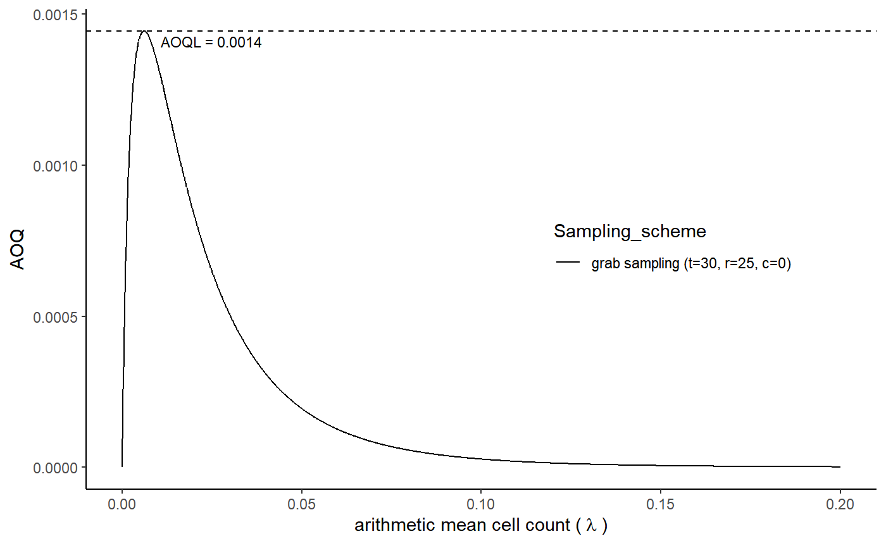

R/AOQL_grab_B.R
AOQL_grab_B.RdAOQL_grab_B provides the AOQ curve and calculates AOQL value based on average microbial counts.
AOQL_grab_B(c, r, t, distribution,llim, K, m, sd)
| c | acceptance number |
|---|---|
| r | number of primary increments in a grab sample or grab sample size |
| t | number of grab samples |
| distribution | what suitable microbiological distribution we have used such as |
| llim | the upper limit for graphing the arithmetic mean of cell count |
| K | dispersion parameter of the Poisson gamma distribution (default value 0.25) |
| m | microbiological limit with default value zero, generally expressed as number of microorganisms in specific sample weight |
| sd | standard deviation of the lognormal and Poisson-lognormal distributions on the log10 scale (default value 0.8) |
AOQ curve and AOQL value based on average microbial counts
Since \(P_a\) is the probability of acceptance, \(\lambda\) is the arithmetic mean of cell count and the outgoing contaminated arithmetic mean of cell count of primary increments is given by \(AOQ\) as the product \(\lambda P_a\). The quantity \(AOQL\) is defined as the maximum proportion of outgoing contaminated primary increments and is given by $$AOQL ={\max_{\lambda \geq 0}}{\lambda P_a}$$
c <- 0 r <- 25 t <- 30 distribution <- 'Poisson lognormal' llim <- 0.20 AOQL_grab_B(c, r, t, distribution, llim)